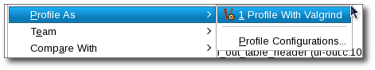
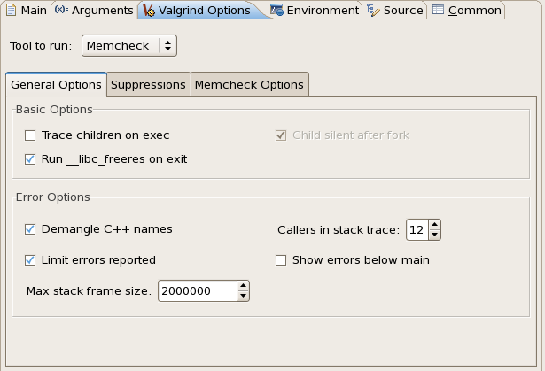
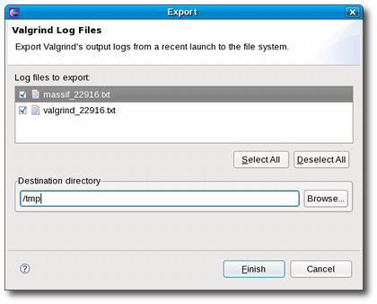

| General Usage | ||
|---|---|---|
|
|
|
|
| Installing | Using Memcheck | |
You can use the Valgrind plug-in's "one-click launch" shortcut to run a default profile. Doing so is similar to running valgrind ./program_name from the command line. To use the one-click launch shortcut, right-click on the
project or
binary name in the
Project Explorer
window and navigate to Profile As > Profile With Valgrind. If a source file belonging to that program is available on any open editor, you can also right-click inside the editor to navigate to the one-click launch.

To configure a Valgrind profile run, navigate to Profile As > Profile Configurations to access the
Profile Configurations
menu.

The
Profile Configurations
menu allows you to configure a profile run with some basic Valgrind profiling options, along with the most useful options for each Valgrind tool. These settings can be configured in the
Valgrind Options
tab of a specific profile run.

The General Options tab allows you to configure the following options:
exec system call. This is identical to using the --trace-children= option. This is disabled by default.
__libc_freeres routine after the profile run exits. This routine instructs glibc to release all memory it has allocated, and is similar to using the --run-libc-freeres= option. This is enabled by default.
fork call.
g++ during compilation) back to something similar to their original form. This is enabled by default.
main(). This is disabled by default.
For more information about these options, refer to man valgrind.
You can also configure your profile run to use a suppressions file (similar to the --suppressions= option. To do this, click the
Suppressions
tab.

The Workspace button allows you to select a resource from the workspace as your suppressions file. To use a suppressions file outisde of the workspace, use the File System button.
To export the raw data collected during a Valgrind profile run, use the Export wizard menu. To access the Export wizard menu, navigate to File > Export and select Valgrind Log Files under the category Other.

Alternatively, you can also use the Export Valgrind Log Files icon (
 ) on the Valgrind view toolbar to access the
Export
wizard menu.
) on the Valgrind view toolbar to access the
Export
wizard menu.
The Valgrind Eclipse plugins were designed and tested on Linux systems only. However, the Valgrind tools are also available on Mac OS X and so too are the Linux Tools Eclipse Valgrind plugins. The plugins are not officially supported on Mac OS X, but here are instructions to get it working.
As of Apr 19, 2010 the official release of the Valgrind tool does not work on 10.6. However, there are patches available to make it work.
Brief instructions to compile the Valgrind tool is here: http://code.google.com/p/data-race-test/wiki/ValgrindOnSnowLeopard
Essentially, you need to run the following script. (Ensure you have wget installed)
svn co -r 11104 svn://svn.valgrind.org/valgrind/trunk valgrind cd valgrind wget http://bugs.kde.org/attachment.cgi?id=40091 -O snow-leopard.patch wget http://bugsfiles.kde.org/attachment.cgi?id=40900 -O arc4random.patch wget http://bugsfiles.kde.org/attachment.cgi?id=42530 -O sidt.patch wget http://bugsfiles.kde.org/attachment.cgi?id=42892 -O signal.patch patch -p0 < snow-leopard.patch patch -p0 < arc4random.patch patch -p1 < signal.patch cd VEX; patch -p0 < ../sidt.patch ; cd .. touch darwin10-drd.supp touch darwin10.supp ./autogen.sh || autoreconf -fvi ./configure --prefix=`pwd`/inst make -j 8 && make install
Once this is done, see instructions below for other Mac OS's
Valgrind is only compatible with x86 binaries on Mac OS, so if you have x86_64 you'll need to ensure that x86 binaries are being built. To do this, right click on the project and select Properties.
Within the Properties window, select C/C++ Build then add '-m32' to the Command field for the MacOS X C++ Linker, GCC C++ Compiler and GCC C Compiler. This will cause x86 binaries to be created.
First ensure you have a release of the Valgrind command-line tool installed. See http://valgrind.org/ and see above for special Valgrind instructions. After installing, you will need to create a symlink to /usr/bin/valgrind so the Valgrind plugin can find it.
Use which valgrind to find the install location of the Valgrind binary.
ln -s /usr/bin/valgrind /location/of/valgrind will create the symlink.
After that, the Eclipse Valgrind plugin should work as specified in other parts of this wiki page.
|
|

|
|
| Installing | Using Memcheck |